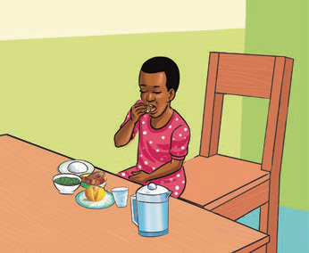
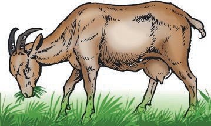

Sifa za viumbehai
Viumbehai wana sifa kuu saba, ambazo ni kula, kupumua, kuitikia vichocheo, kujongea, kuzaliana, kutoa takamwili na kukua.
Kula
Viumbehai huhitaji chakula ili waendelee kuishi. Wanyama hula vyakula vinavyotokana na wanyama na mimea. Kielelezo 2 kinaonesha binadamu na mbuzi wakila. Vyakula huvipatia viumbehai virutubisho mbalimbali kama vile protini, wanga, mafuta, madini na vitamini. Virutubisho huvifanya viumbehai kukua na kupata nguvu. Vilevile, virutubisho husaidia mwili kujikinga na magonjwa mbalimbali. Mimea hujitengenezea chakula kwa kutumia kabonidayoksaidi, maji na uwepo wa mwanga wa jua.
(a)

Kielelezo namba 2(a) kinaonesha mtoto amekaa mezani anakula chakula, huku sahani na kikombe vikiwa mbele yake.(b)

Kielelezo namba 2(b) kinaonesha mbuzi anainamisha kichwa chini akila nyasi za kijani.
Kielelezo namba 2: Viumbehai wakila chakula